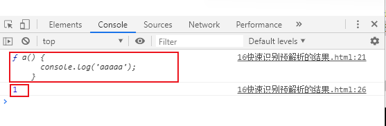
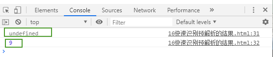
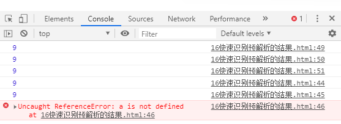

function f1() {
console.log(num);
var num = 10;
}
f1(); //此时运行结果是undefined
此时运行结果是undefined，因为预解析，变量声明被提前了，实际按下面的方式解析的：
function f1() {
var num
console.log(num);
num = 10;
}
f1(); //此时运行结果是undefined
举例2：
//函数调用的时候,把会函数的声明提升到作用域的上面
f1();//调用
var num = 20;//这个变量的声明会提升到变量使用之前
function f1() {
console.log(num);
//var num=10;
}
function f1() {
console.log(num);//undefined
var num = 10;
}
f1();
console.log(num);//报错
<script>
function f1() {
console.log("哈哈");
}
</script>
<script>
f1();
function f1() {
console.log("嘎嘎");
}
</script>
var a = 25;
function abc() {
alert(a);//undefined
var a = 10;
}
abc();
console.log(a);//25
console.log(a);
function a() {
console.log('aaaaa');
}
var a = 1;
console.log(a);//1
预解析下的代码解读：
（变量声明在最上面，下面是函数声明）
var a;
function a() {
console.log('aaaaa');
}
console.log(a); //此时输出的是函数a的代码
a = 1;
console.log(a);//1
代码结果：

var a = 18;
f1();
function f1() {
var b = 9;
console.log(a);//undefined
console.log(b);//9
var a = '123';
}
预解析下的代码解读：
var a;
a = 18;
function f1() {
var b;
var a;
b = 9;
console.log(a);//undefined
console.log(b);//9
a = '123';
}
f1();
代码结果：

f1();
console.log(c);
console.log(b);
console.log(a);
function f1() {
var a = b = c = 9;
console.log(a);
console.log(b);
console.log(c);
}
预解析下的代码解读：
recap：
function f1() {
var a;//局部变量
a=9;
//隐式全局变量
b=9;
c=9;
console.log(a);//9
console.log(b);//9
console.log(c);//9
}
f1();
console.log(c);// 9
console.log(b);// 9
console.log(a);//报错
代码结果：

练习4：
f1();//-----报错
var f1 = function () {
console.log(a);
var a = 10;
};
预解析下的代码解读：
var f1;
f1();//-----报错，不能调用，因为下的f1是赋值的表达式
f1 = function () {
console.log(a); //f1报错，这里就没有结果啦
var a = 10;
};